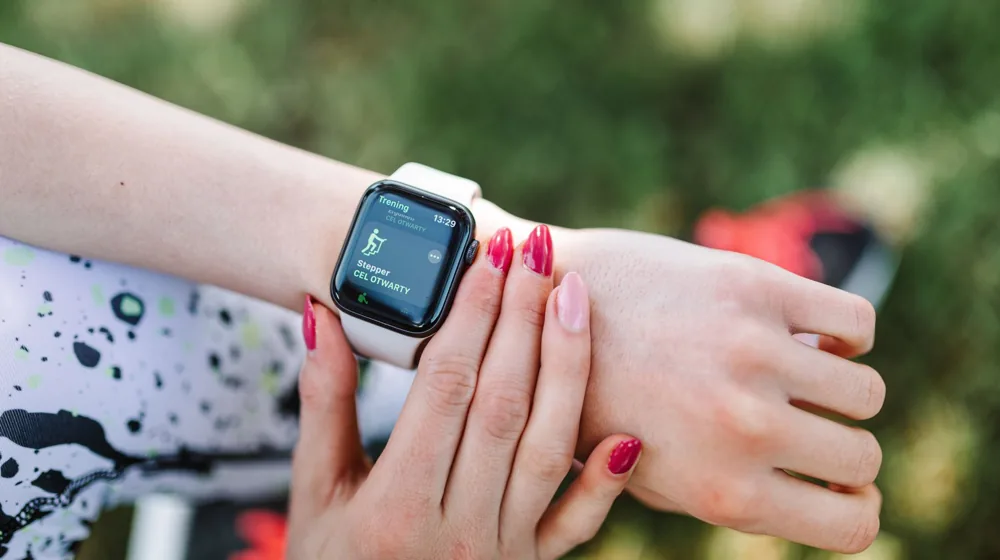

초보 러너를 위한 페이스 조절법: 숨차지 않고 5km 달리는 3가지 기술
사진: Ketut Subiyanto / Pexels (무료 이미지, 출처 표기)
초보 러너가 첫 5분 만에 지치는 진짜 이유

처음 달리기를 시작할 때 의욕이 앞서 초반부터 빠르게 달리다 금세 숨이 차서 멈춰 선 경험이 있으실 겁니다. 러닝 초보자에게 가장 필요한 기술은 속도를 내는 것이 아니라, 지치지 않고 오랫동안 달릴 수 있도록 에너지를 분배하는 '페이스(Pace, 1km를 달리는 데 걸리는 분/초) 조절'입니다.
국민체육진흥공단 체력 측정 기준에 따르면, 초보 러너의 가장 큰 실수는 자신의 체력 수준보다 높은 페이스로 시작하는 오버페이스(Over-pace)입니다. 초반에 체력을 모두 소진하면 근육에 젖산이 빠르게 쌓여 완주가 불가능해집니다. 완주의 기쁨을 맛보기 위해서는 나에게 맞는 적정 속도를 먼저 찾아야 합니다.
나에게 맞는 '적정 페이스' 찾는 3가지 기준
개인마다 체력과 심폐 능력이 다르기 때문에 절대적인 속도 기준은 없습니다. 주관적인 느낌과 객관적인 지표를 활용하여 나만의 페이스를 찾아보세요.
- 대화가 가능한 수준 (Talk Test): 달리는 동안 옆 사람과 끊기지 않고 완전한 문장으로 대화할 수 있는 속도가 가장 안전한 유산소 운동 페이스입니다. 헐떡이지 않고 말할 수 있어야 합니다.
- 코 호흡 유지하기: 입을 다물고 코로만 숨을 들이마시고 내쉴 수 있는 정도의 속도를 유지해 보세요. 입으로 숨을 크게 쉬어야만 한다면 이미 오버페이스 상태입니다.
- 심박수 기준 (Zone 2 영역): 스마트워치를 사용한다면 최대 심박수의 60~70% 수준인 '존 2(Zone 2)' 영역을 유지하는 것이 모세혈관을 발달시키고 기초 체력을 기르는 데 가장 효과적입니다.
운동 강도 및 페이스 가이드라인
아래 표는 초보 러너가 참고하기 좋은 운동 강도별 신체 반응과 페이스 조절 기준입니다.
※ 위 수치는 평균적인 초보자 기준이며, 개인의 체력 수준에 따라 다를 수 있으므로 몸의 신호에 귀를 기울이는 것이 중요합니다.
부상 없이 완주하는 3단계 구간별 분배 전략
준비 없이 무작정 달리기 시작하면 관절에 무리가 가고 쉽게 지칩니다. 30분 달리기를 목표로 한다면 아래와 같이 구간을 나누어 페이스를 조절해 보세요.
- 1단계: 웜업 단계 (첫 5~10분): 걷는 속도보다 약간 빠른 수준으로 가볍게 몸을 풉니다. 심장과 근육에 '이제 달릴 것이다'라는 신호를 보내는 과정으로, 아주 느린 페이스로 시작해야 합니다.
- 2단계: 본 러닝 단계 (10~25분): 앞서 찾은 '대화가 가능한 적정 페이스'를 일정하게 유지합니다. 속도가 빨라지려 할 때마다 의도적으로 보폭을 줄여 페이스를 다운시키는 조절이 필요합니다.
- 3단계: 쿨다운 단계 (마지막 5분): 갑자기 멈추지 않고 천천히 속도를 줄이며 걷기로 전환합니다. 심박수를 서서히 낮추고 근육에 쌓인 피로 물질을 배출하는 데 필수적인 단계입니다.
초보 러너가 자주 묻는 질문과 주의사항
Q. 달릴 때 옆구리가 너무 아픈데 어떻게 해야 하나요?
달리기 중 발생하는 옆구리 통증은 주로 불규칙한 호흡이나 갑작스러운 페이스 상승으로 횡격막에 경련이 일어나기 때문입니다. 이럴 때는 즉시 속도를 낮추어 걷고, 코로 깊게 들이마시고 입으로 길게 내쉬는 심호흡을 반복해 주세요.
Q. 스마트워치 페이스 수치가 자꾸 흔들려요.
GPS 기반의 스마트워치는 빌딩 숲이나 나무가 많은 곳에서 일시적인 오차가 발생할 수 있습니다. 수치에 지나치게 집착하기보다는 본인의 호흡과 발걸음 리듬에 집중하는 감각을 기르는 것이 더 좋습니다. 관절에 통증이 지속된다면 달리기를 멈추고 휴식을 취해야 하며, 증상이 지속될 경우 전문의의 진단을 받으시길 권장합니다.
🔗 이 글도 함께 보면 좋아요: 운동 후 통증, 단순 근육통 vs 부상 구분하는 4가지 기준
관련 추천 상품
이 포스팅은 쿠팡 파트너스 활동의 일환으로, 이에 따른 일정액의 수수료를 제공받습니다.